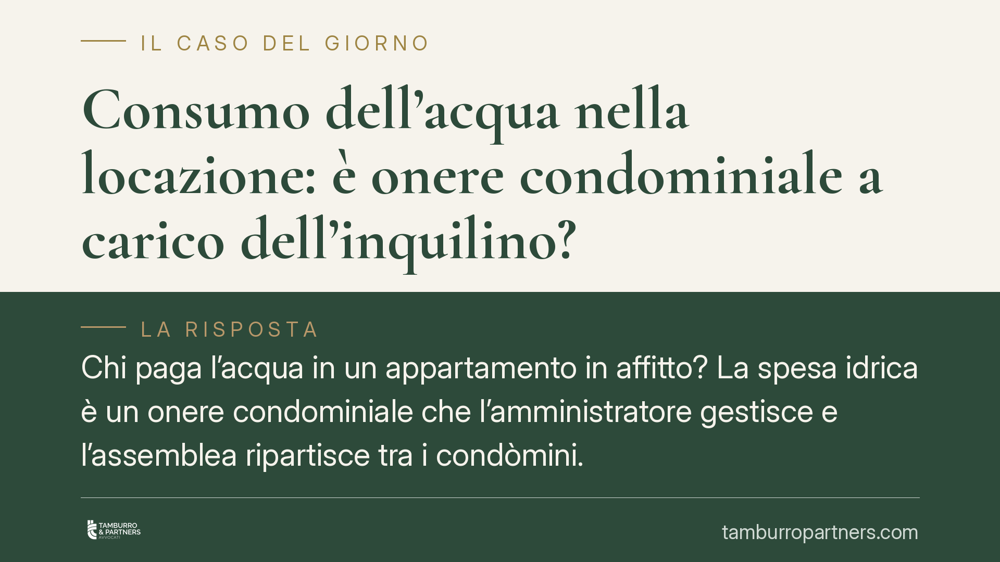

Consumo dell'acqua nella locazione: è onere condominiale a carico dell'inquilino?
Chi paga l'acqua in un appartamento in affitto? La spesa idrica è un onere condominiale che l'amministratore gestisce e l'assemblea ripartisce tra i condòmini. Nel rapporto di locazione, però, il costo del consumo grava sull'inquilino come onere accessorio. Distinguere i due piani evita contestazioni su bollette e conguagli.

Il caso
La domanda ricorre in ogni contratto di locazione a uso abitativo: il consumo dell'acqua rientra tra le spese che l'inquilino deve rimborsare al proprietario, oppure resta a carico di quest'ultimo?
La risposta richiede di tenere separati due rapporti giuridici distinti. Il primo lega il condominio al proprietario dell'unità immobiliare; il secondo lega il proprietario (locatore) al conduttore (inquilino). Confondere i due piani è la principale causa di contenzioso sui conguagli.
Inquadramento normativo
Sul primo versante, la gestione del servizio idrico comune spetta all'amministratore. L'art. 1130, n. 3, del Codice civile gli attribuisce il compito di riscuotere i contributi ed erogare le spese occorrenti per la gestione delle parti comuni e per l'esercizio dei servizi condominiali.
Il riparto della spesa tra i condòmini non discende dall'art. 1135 c.c., che si limita a elencare le attribuzioni dell'assemblea (approvazione del preventivo e del consuntivo, decisioni sulle opere di manutenzione straordinaria, costituzione del fondo speciale e simili). Il criterio di ripartizione è fissato dagli artt. 1123 e seguenti c.c.: le spese si dividono in proporzione ai millesimi di proprietà, salvo che si tratti di servizi suscettibili di uso differenziato, nel qual caso la ripartizione segue l'uso effettivo. Per l'acqua, quando l'edificio è dotato di contatori individuali, la spesa può essere imputata in base ai consumi realmente misurati.
L'installazione dei contatori di sotto-utenza è incentivata dalla normativa ambientale: l'art. 146 del d.lgs. 152/2006 (Codice dell'ambiente) promuove il risparmio idrico e la misurazione puntuale dei consumi, mentre l'art. 154 disciplina la tariffa del servizio idrico integrato. Va però precisato un punto: queste disposizioni incentivano la misurazione, ma non impongono di per sé un criterio di riparto condominiale. Il criterio resta quello stabilito dal Codice civile e dalla delibera assembleare.
Sul secondo versante, quello tra locatore e conduttore, opera l'art. 9 della L. 392/1978, che pone gli oneri accessori a carico dell'inquilino. Tra questi rientrano il consumo dell'acqua e le spese di gestione dei servizi comuni goduti in via diretta. Il proprietario anticipa al condominio la propria quota; l'inquilino gli rimborsa la parte relativa ai consumi e ai servizi, secondo il rendiconto.
Anche la giurisprudenza di merito ha ribadito che il consumo idrico costituisce onere accessorio ripartibile in base ai consumi effettivi quando l'immobile dispone di misuratori individuali. Si tratta di un principio consolidato, che risolve il caso senza necessità di deroghe convenzionali.
Implicazioni pratiche
Per il proprietario, il consumo dell'acqua non è una spesa da sopportare in via definitiva: è un onere anticipato al condominio e recuperabile dall'inquilino. Il recupero, però, presuppone documentazione: il rendiconto condominiale o la lettura del contatore individuale.
Per l'inquilino, la spesa idrica è dovuta in quanto onere accessorio, ma solo nella misura del consumo effettivo e delle voci a suo carico. Non è tenuto a rimborsare spese di natura straordinaria o costi che gravano sul proprietario come titolare del diritto.
Il nodo pratico è la trasparenza dei conguagli. L'art. 9 L. 392/1978 prevede che il conduttore possa chiedere l'indicazione specifica delle spese e i relativi criteri di ripartizione, con accesso ai documenti giustificativi. Contestazioni frequenti nascono proprio dalla mancanza di questa documentazione.
Cosa fare in concreto
- Verificate la presenza di contatori individuali prima della firma del contratto: la loro presenza consente il riparto per consumo effettivo e riduce le controversie sui conguagli.
- Specificate nel contratto le voci che compongono gli oneri accessori e il criterio di calcolo, richiamando espressamente l'art. 9 L. 392/1978.
- Conservate il rendiconto condominiale e le letture dei contatori: sono la base documentale del conguaglio e la difesa in caso di contestazione.
- Richiedete (inquilino) l'indicazione analitica delle spese prima di procedere al rimborso; il diritto di accesso ai giustificativi è previsto dalla legge.
- Distinguete gli oneri accessori dalle spese straordinarie: queste ultime restano a carico del proprietario e non possono essere ribaltate sul conduttore.
È opportuno allineare fin dall'inizio contratto di locazione e criteri di riparto condominiale, per evitare che al momento del conguaglio emergano voci non concordate.
Contributo informativo a cura di Tamburro & Partners - Avv. Giuseppe Tamburro. Non costituisce parere legale.
Ogni condominio ha una storia a sé.
Se gestisci un'amministrazione e vuoi un confronto su una specifica questione condominiale, scrivi allo studio. Ti rispondiamo entro un giorno lavorativo.